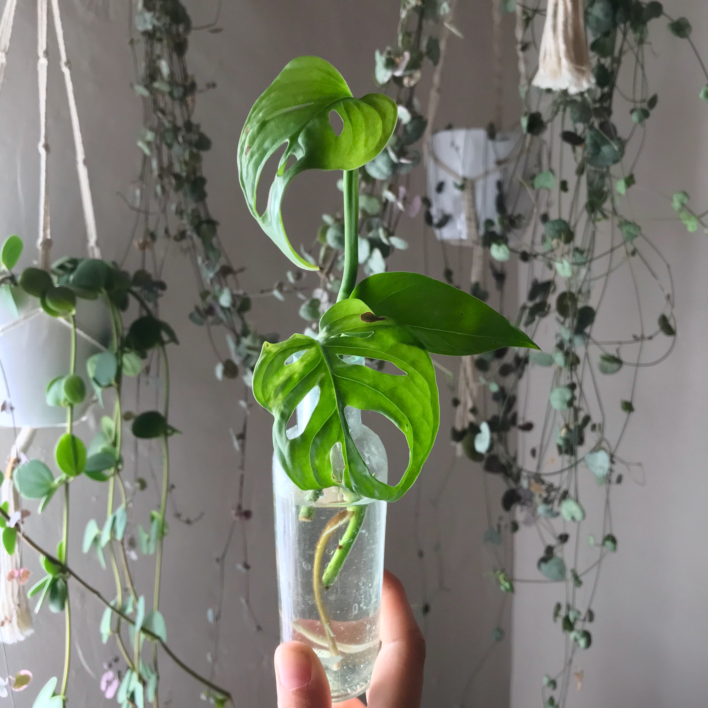

Monstera Propagation
Embark on the rewarding journey of Monstera propagation This section demystifies the process, offering clear instructions on creating new plants from cuttings. Start growing your Monstera family today and share the love with friends and fellow plant enthusiasts.
Propagating Stem Cuttings

Follow these steps to ensure your Monstera deliciosa stem cutting roots successfully.
- Find a node with an axillary bud. Multiple leaves on your cutting promote better rooting through photosynthesis.
- Cut 1 to 2 inches below the node, along the internode. If using a rooting hormone, rub along the cutting’s node.
- Moisten the rooting medium.
- Make a hole in the medium and insert your cutting.
- Keep cuttings moist.
- Check for root development by lifting your cutting carefully using a popsicle stick, plant transplant or small spatula.
- Transplant your cutting into a new container filled with moist potting soil. Leave about 2 inches of media between your cutting and your container.
When choosing a container for your cuttings, consider the size of your cutting, support and drainage. Monstera cuttings are top heavy, so select a heavier container to prevent tipping over.
Source: Propagating Monstera Deliciosa | University of Minnesota